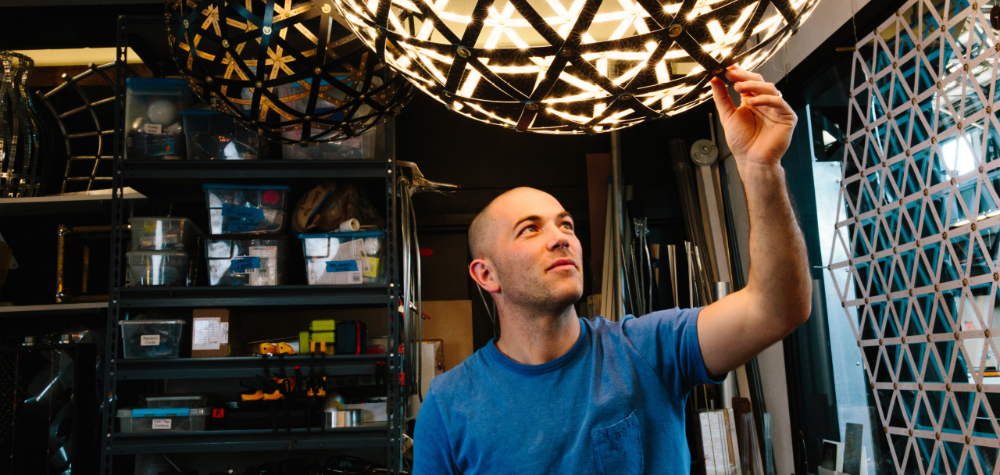
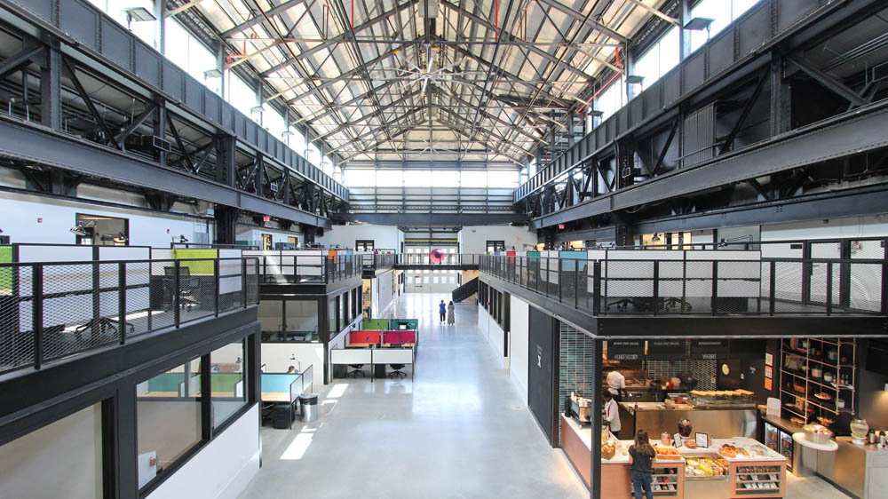
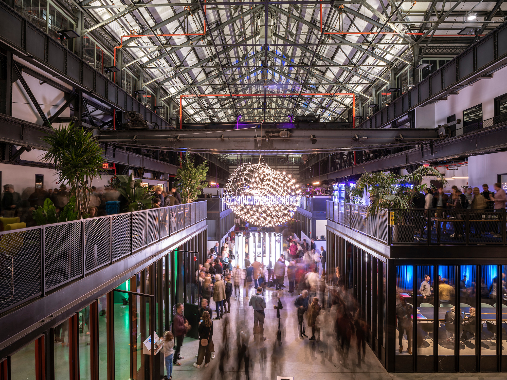

Blending craft with technology, Jason Krugman explores new ways of arranging electricity in three dimensions. His sculptures often use their physical structure to conduct electricity, allowing thousands of lights to sit softly amongst minimal wire forms.
Krugman holds two US patents and has numerous permanent LED installations in the United States, Asia, and Europe.
His studio is located at New Lab in the Brooklyn Navy Yard, an old ship-fabrication facility that now houses dozens of small companies inventing new types of hardware and software.

Photo by James Chororos. New Lab 2019. Basket Centerpiece by Jason Krugman commissioned by New Lab.

Photo by James Chororos. New Lab 2019. Basket Centerpiece by Jason Krugman commissioned by New Lab.
Jason Krugman Studio · View larger map
Studio Visits
Our studio is open for in person visits. Krugman Studio is located inside the Brooklyn Navy Yard, close to the intersection of Cumberland and Flushing Avenue. Access to the Navy Yard must be arranged ahead of time. To schedule a visit and obtain an entry pass please email us at info@jasonkrugman.com directly to set up a time.
Teaching and Education
Between 2010 and 2016, Jason Krugman taught classes in Drawing Machines, Kinetic Sculpture and Physical Computing at Sarah Lawrence College, Rhode Island School of Design and New School. He holds a Master's Degree in Interaction Design from NYU's Interactive Telecommunications Program and a Bachelor's Degree in Economics from Tufts University.
Selected Press and Content
| April 20, 2020 | Darc Awards | Art Bespoke Award Winner |
| October 1, 2020 | Lit Design Awards | Winner – Light Art Project |
| June 12, 2018 | Wired Magazine | Form and Function – Light Sculpture – Perry Ellis |
| November 8, 2017 | Wired Brand Lab | Make. Every day. The NYC Tour |
| November 5, 2016 | Illumni | Deepstaria, Breathing LED Sculpture |
| June 3, 2016 | Material Driven | Sculpting With Light, Magnificently |
| January 2015 | National Geographic – Instagram | @JasonKrugman moves his light sculpture Freddy |
| November 2014 | Forbes | Living Objects at NYFOL |
| October 2014 | Fox 5 New York | The Living Tree-House |
| September 2014 | Illumni | Illumni Microscope |
| March 2013 | Green Building & Design | Blurring Lines & Lights |
| October 24, 2011 | Architects Newspaper | Feature Spotlight: Claremont University |
| October 24, 2011 | Los Angeles Times | Architecture Review: Administrative Campus Center at Claremont |
| October 2011 | Details Magazine | BMWi Technology Innovators |
| July 20, 2011 | Creators Project | User Preferences: Tech Q&A With Jason Krugman |
| May 16, 2011 | Creators Project | Sculpting Fluid and Reaction LED Surfaces |
| May 13, 2010 | Creative Applications Network | Organic Electric [Inspiration] |
| May 11, 2010 | New York Times | A Smashing Idea: Eco-Friendly Aggression |
| May 2010 | New York Times Video | Recycling With A Vengeance |
| April 2010 | MAKE Magazine | Bright Lights, Big Installation |
Selected Exhibitions
| Schwinghammer Gallery, New York, NY | Patrick Parrish Gallery, New York, NY |
| ER Butler & Co, New York, NY | Method and Concept Gallery, Naples, FL |
| MOMA, New York, NY – Design and Violence | Florida State University Museum, Tallahassee, FL |
| Cornell University, Ithaca NY | Mass Art, Boston MA |
| DUMBO Arts Festival, Brooklyn NY | The New Museum, New York, NY |
| PLUS Design Gallery, Milan Italy | Showroom Bennetton, Milan Italy |
| American Academy, New York, NY | New York Hall of Science, Queens, NY |
Selected Commissions
| Jack Resnick & Sons | IBM Watson |
| General Electric | Holland America Cruise Lines |
| BMWi | Schuylkill Environmental Education Center |
| Donohoe Development Corporation | Summit New Jersey Public Arts |
| Claremont University Consortium | CW Television Network |
| AC Entertainment | New York City Parks Department |